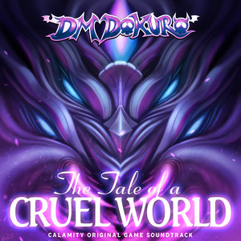

DM DOKURO "The Tale of a Cruel World" (2020) Genre: Video game soundtrack / symphonic metalRip Calamity, Beloved mod for terraria ruined by a few higher ups, the community is truly shattered and all that remains is a void.
I didn't really pay attention to the music of this modpack when I initially played terraria, it seemed more like background noise, until I got to the devourer of gods (DoG), that really made me go 'wow this modpack really has so solid beats', so when I finally reached the album it truly reshaped my mind about gaming music, I know everyone loves their undertale but the variation in this soundtrack is truly something I have nothing heard before and I am very happy to see the continuation of this in the artist who took on the flame whos music is just as well made. The history of the artist is something that is quite sensitive to the community, being constantly pressured by the playerbase to put out more music of such quality really does a number on someones mental state, as a result they stepped down and now this album is not only a beloved album to the fanbase but a dark time to the artist.
The opening theme 'Tale of a Cruel Word' starts off slow with a introduces a piano which takes the show away, truly a great opening song. It then bring in a kind of, upbeat song with Guardian of the Former Seas, "good luck and give it your best shot" feeling. That doesn't last long though in the later tracks.
Stained Brutal Calamity is one of my favourite tracks, it is the boss theme of the Brimestone Witch Calamitas, one of the final bosses in the game (penultimate if anything). Along with Roar of the Jungle Dragon, boss of the belive it, the Jungle dragon Yharon. A lot of more honourable mentions need to be said, Tale of a Cruel World, Universal Collapse and Infestation, all of which are as good as or on level with my top two but for the same of keeping it nice and note a paragraph of songs I chose the top two. The Whole Album deserves to be a favourite nothing can be said to show how good it is.